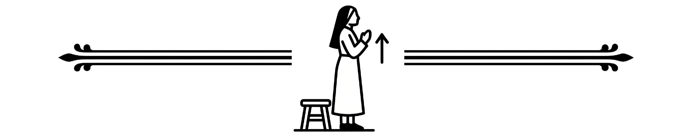
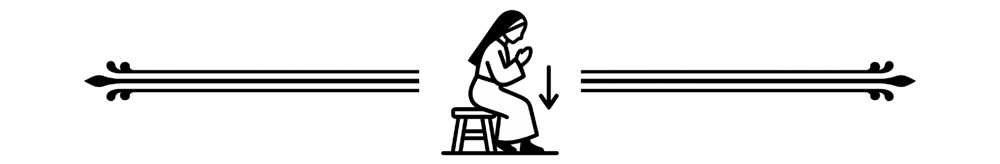

14
Ewangelia
Kapłan przechodzi na stronę Ewangelii. Na słowa „Wyjątek z Ewangelii…” czyni znak krzyża na mszale, a potem na czole, ustach i piersi. Wierni również czynią kciukiem mały znak krzyża na czole, ustach i piersi.

K. Pan z wami.
W. I z duchem twoim.
K. 
Wyjątek z Ewangelii Świętej według świętego Mateusza.
W. Chwała Tobie, Panie.
S. Dóminus vobíscum.
M. Et cum spíritu tuo.
S. Sequéntia sancti Evangélii secúndum Matthaeum.
M. Gloria tibi, Dómine.
EWANGELIAMt 19, 3-6
Onego czasu: Przystąpili do Jezusa faryzeusze i aby Go podchwycić, mówili: Czy wolno mężowi rozwieść się z żoną swoją dla jakiejkolwiek przyczyny? A On odpowiadając rzekł: Czyż nie czytaliście, że Stwórca od początku «mężczyzną i niewiastą stworzył ich», i rzekł: «Dlatego opuści mężczyzna ojca i matkę, a połączy się z żoną swoją, i staną się dwoje jednym ciałem». Co tedy Bóg złączył, człowiek niech nie rozłącza.
In illo témpore: Accessérunt ad Iesum pharisǽi tentántes eum, et dicéntes: Si licet hómini dimíttere uxórem suam, quacúmque ex causa? Qui respóndens, ait eis: Non legístis, quia qui fecit hóminem ab inítio, másculum et féminam fecit eos? et dixit: «Propter hoc dimíttet homo patrem, et matrem, et adhærébit uxóri suæ, et erunt duo in carne una». Itaque iam non sunt duo, sed una caro. Quod ergo Deus coniúnxit, homo non séparet.
Po Ewangelii wierni odpowiadają:
W. Chwała Tobie, Chryste.
M. Laus tibi, Christe.
Msza wiernych
Offertorium
Kapłan całuje ołtarz i pozdrawia wiernych wzywając wszystkich do modlitwy.
K. Pan z wami.
W. I z duchem twoim.
K. Módlmy się.
S. Dóminus vobíscum.
M. Et cum spíritu tuo.
S. Orémus.

Kapłan wykonuje obrzędy ofiarowania, a chór śpiewa w tym czasie antyfonę na ofiarowanie. Następnie kapłan odmawia po cichu modlitwę zwaną sekretą, której zakończenie mówi głośno:
K. Przez wszystkie wieki wieków.
W. Amen.
S. Per omnia sæcula sæculorum.
M. Amen.